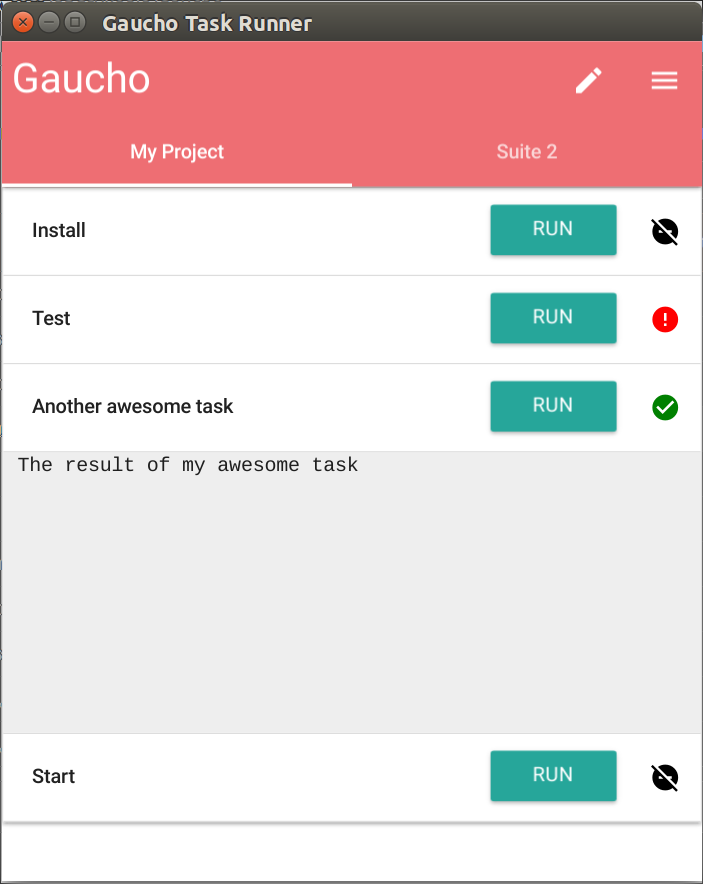
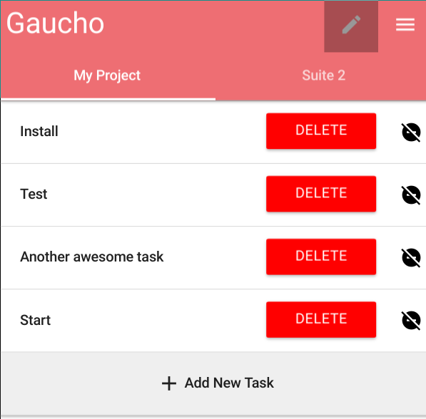
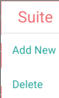
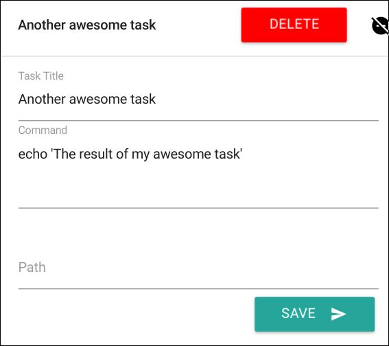

<!DOCTYPE HTML><html><head><meta charset="utf-8"><title>Gaucho › Angry Koala</title><meta name="author" content="angrykoala"><meta name="description" content="A blog for programmers and koalas"><meta name="viewport" content="width=device-width,initial-scale=1,maximum-scale=1"><meta property="og:title" content="Gaucho"><meta property="og:site_name" content="Angry Koala"><meta property="og:image" content=""><link href="/favicon.png" rel="icon"><link rel="alternate" href="/atom.xml" title="Angry Koala" type="application/atom+xml"><link rel="stylesheet" href="/css/style.css" media="screen" type="text/css"><!--[if lt IE 9]><script src="//html5shiv.googlecode.com/svn/trunk/html5.js"></script><![endif]--></head></html><body><header id="header"><div class="meta inner"><h1><a href="/">Angry Koala</a></h1><h2><a href="/">A Koala With a Computer</a></h2><nav id="main-nav"><ul><li><a href="/archives">Archives</a></li><li><a href="https://github.com/angrykoala" rel="external nofollow noopener noreferrer" target="_blank">GitHub</a></li><li><a href="/projects">My Projects</a></li><li><a href="/about">About</a></li></ul><div class="clearfix"></div></nav></div><div class="clearfix"></div></header><div id="content" class="inner"><div id="main-col" class="alignleft"><div id="wrapper"><article class="post"><div class="post-content"><header><h1 class="title">Gaucho</h1><time datetime="2017-01-15T11:27:10.000Z">2017-01-15</time></header><div class="entry"><blockquote><p>A graphical task runner powered by <a href="https://github.com/angrykoala/yerbamate" rel="external nofollow noopener noreferrer" target="_blank">Yerbamate</a></p></blockquote><p>Gaucho is a graphical task runner, allowing you to configure simple commands and scripts (a.k.a. tasks) to be launched and stopped whenever you want using a simple list-style GUI</p><a id="more"></a><h2><span id="features">Features</span></h2><ul><li>Execute your own scripts at will.<ul><li>e.g. servers, builds, background tasks.</li></ul></li><li>Stop any running task and subprocess.</li><li>Easy interface to see the status of all running tasks</li><li>Simple configuration for your tasks</li><li>Windows, Linux and Mac compatibility</li><li>Open Source</li></ul><p><br><em>Gaucho 0.1</em></p><h2><span id="instructions">Instructions</span></h2><p>You can download the latest release of <em>Gaucho</em> <a href="https://github.com/angrykoala/gaucho/releases" rel="external nofollow noopener noreferrer" target="_blank">here</a>, or you can compile from the <a href="https://github.com/angrykoala/gaucho" rel="external nofollow noopener noreferrer" target="_blank">source code</a></p><p>To use it, simply execute gaucho. The default gaucho configuration have some example tasks already configured, to remove, create or edit existing tasks click on the <em>edit button</em> at the top right corner.<br></p><p>In edit mode, you will see the options to <em>Delete</em> tasks.</p><p><br><em>Edit Mode</em></p><p>In this mode, you can create/remove <em>Suites</em> to organize your tasks clicking on the menu button (next to the edit button).</p><p></p><p>When adding a new task (or editing an existing one by clicking on it) you will see a simple form:</p><p><br><em>Edit Task Form</em></p><p>For each task you can configure 3 parameters:</p><ul><li><strong>Task Name:</strong> A recognizable name for the task</li><li><strong>Command:</strong> The command/script to be executed (bash, cmd, executable…)</li><li><strong>Path:</strong> The full path to execute given command (by default it will be executed on the same path as Gaucho)</li></ul><blockquote><p>Gaucho is Licensed under GNU General Public License v3 and is available on <a href="https://github.com/angrykoala/gaucho" rel="external nofollow noopener noreferrer" target="_blank">GitHub</a></p></blockquote></div><footer><div class="categories"><a href="/categories/project/">Project</a></div><div class="addthis addthis_toolbox addthis_default_style"><a class="addthis_button_tweet"></a> <a class="addthis_button_google_plusone" g:plusone:size="medium"></a> <a class="addthis_counter addthis_pill_style"></a></div><script type="text/javascript" src="//s7.addthis.com/js/300/addthis_widget.js"></script><div class="clearfix"></div></footer></div></article><section id="comment"></section></div></div><aside id="sidebar" class="alignright"><div class="widget tag"><h3 class="title">Recent Posts</h3><ul class="entry"><li><a href="/project/gaucho/">Gaucho</a></li><li><a href="/project/yerbamate/">Yerbamate</a></li><li><a href="/project/yamp/">Yamp</a></li><li><a href="/tutorial/node-wizardry/">Node Wizadry</a></li><li><a href="/project/chuckscript/">ChuckScript</a></li></ul></div><div class="widget tag"><h3 class="title">Categories</h3><ul class="entry"><li><a href="/categories/general/">General</a><small>1</small></li><li><a href="/categories/project/">Project</a><small>4</small></li><li><a href="/categories/tutorial/">Tutorial</a><small>1</small></li></ul></div></aside><div class="clearfix"></div></div><footer id="footer" class="inner"><div class="alignleft">&copy; 2018 angrykoala</div><div class="clearfix"></div></footer><script src="//ajax.googleapis.com/ajax/libs/jquery/2.0.3/jquery.min.js"></script></body>